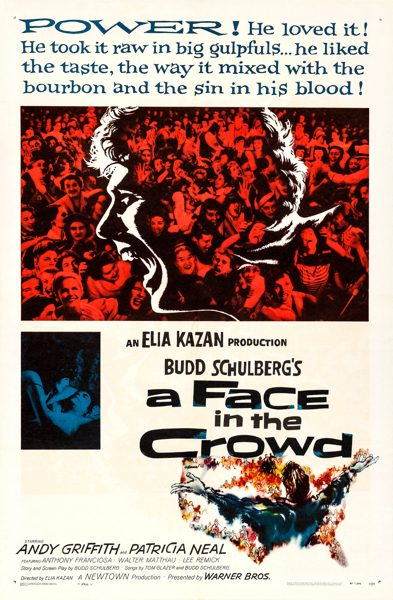

A Face in the Crowd
Starring: Andy Griffith, Patricia Neal, Anthony Franciosa
Director: Elia Kazan
Writer: Budd Schulberg
Producer: Elia Kazan
A Face in the Crowd is a 1957 American satirical drama film directed by Elia Kazan and starring Andy Griffith (in his film debut), Patricia Neal, and Walter Matthau. The screenplay by Budd Schulberg is based on his short story "Your Arkansas Traveler" from the 1953 collection Some Faces in the Crowd.
Trivia
- The film was produced under the working title of The Arkansas Traveler, which was the name of Budd Schulberg's source short story from his 1953 collection Some Faces in the Crowd.
- Schulberg had stated that a conversation with friend Will Rogers Jr., son of Will Rogers—who was known for earthy anecdotes and folksy style—had inspired him to create the Lonesome Rhodes story.
- During their drunken exchange, the younger Rogers had expressed bitterness about his father, stating that the elder Rogers "was so full of shit, because he pretends he's just one of the people, just one of the guys" whereas privately he associated only with high society.
Filming Locations
- New York City
- Location shooting occurred in Memphis, Piggott, Arkansas and Poplar Bluff, Missouri, where the fair and baton-twirling competition scenes were filmed.
Previous Showings
2 Runs • 2 Festivals
All runs on record (2):
- October 22 - 24, 2004Marlon Brando: His First Decade in Films, plus Nine Musicals with Fred Astaire and Ginger Rogersw/ The Men
- October 26 - 28, 2011Fall 2011w/ On the Waterfront